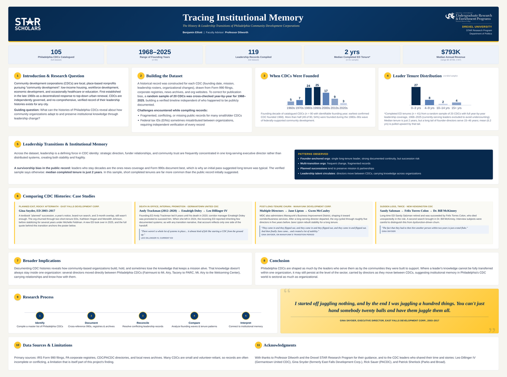
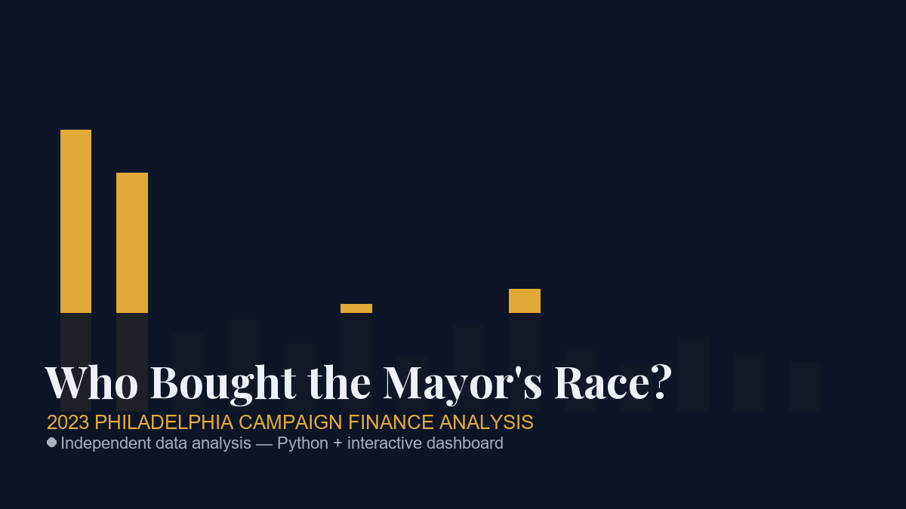

Political Science · Drexel University
I'm Benjamin Elliott
A Drexel University Honors political science student focused on democracy, public policy, and political communication.
I am interested in how political ideas are shaped, communicated, and challenged in modern society, especially through media and public discourse.
Who I Am
About
I am a political science student at Drexel University in the Honors Program, with academic interests in democratic theory and international relations. My work focuses on understanding how political systems function and how public opinion is shaped in an increasingly polarized environment.
I currently serve as a Student Ambassador for Drexel University, leading campus tours and representing university initiatives at admissions events, and as a S.T.A.R. Research Scholar conducting independent research examining the inner workings of local NGOs through qualitative analysis. I previously interned with the campaign for D'Angelo Virgo for Pennsylvania House of Representatives District 192, gaining hands-on experience in political organizing, outreach, and campaign strategy.
Through Drexel's STAR Scholars program, I completed a research project titled Tracing Institutional Memory: The History & Leadership Transitions of Philadelphia Community Development Corporations, examining how community-based organizations build, hold, and sometimes lose institutional knowledge through leadership change.
My Work
Projects & Research

Tracing Institutional Memory (STAR Research)
A Drexel STAR Scholars research project tracing the history and leadership transitions of 105 Philadelphia community development corporations, and what they reveal about institutional memory.
View Poster →
Who Bought the Mayor's Race?
An independent analysis of 2023 Philadelphia campaign finance data — two self-funded mayoral candidates spent $30M+ combined and lost, while the eventual winner raised less on 3,520 separate small-dollar contributions.
View Dashboard →
Campaign Internship Experience
Practical work in voter outreach, messaging, and grassroots organizing during my internship with D'Angelo Virgo's Pennsylvania state house campaign (Feb–May 2026).
Learn More →
Academic Writing Portfolio
A collection of essays and analyses focused on political theory, public policy, media influence, and democratic systems.
Read Samples →
Let's Connect
Contact
I am open to academic, research, and professional opportunities. Send me a message below or email directly at bre.sochi@gmail.com.